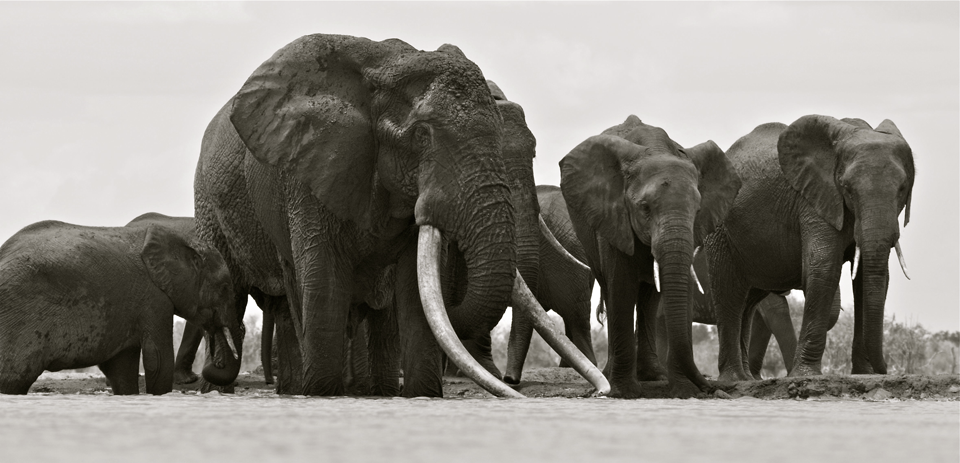
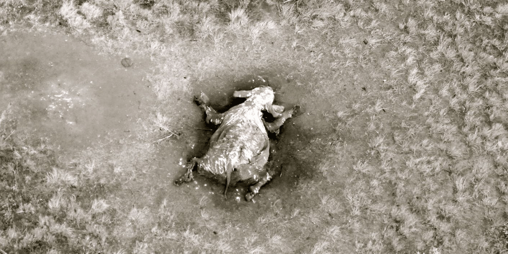

July, 2014
Elephant Conservation in Africa
Press secretary at Animat Habitat™

On June 15th, wildlife filmmaker in Africa Mark Deeble submitted a final chapter for the story of Satao — a legend. Thanks to Mark for sharing his account of the life and death of this magnificent bull elephant, above. Let the story of Satao be a chapter we learn from, and change the way we look at wildlife.
Change in Africa
Massive pressure on natural habitats is fueling extreme climates and species loss. Human population and technological growth are creating a global network of people that are now more than ever more aware of – and more accountable for – the state of the planet. It is clear that recent human history has imposed an imbalance in ecosystems on Earth. It is sad to stand by while entire species go extinct, knowing that the most beautiful animals on the planet are far from safe, knowing that this generation may be the last to live in a time with elephants in the wild, knowing that wild places may only exist for our children's children in picture books.
Elephants are in a battle for survival. Poaching — where elephants are killed for their ivory — has risen at an alarming rate with the emergence and affluence of the middle class in China. Half of the African elephant population has been lost in the last thirty-five years. One hundred thousand elephants have been poached in the last three years alone. There’s less than four hundred thousand left. An average of one hundred elephants are killed for their tusks every day, so it is not hard to do the math and know where this story is going if we do not change something, somewhere, soon.
“Nature is beautiful, and artists who paint and photograph nature celebrate its gorgeous wonders. Nature, however, has its dark side: suffering and dying are part of reality for all living things. But the rate and degree of this in nature have been augmented by man’s actions, causing an alarming depletion of ecosystems and endangering the survival of entire species.” — Robert Bateman. (2010) New Works, Artist's Statement p. 22. Greystone Books.

Satao was one of Africa’s few remaining ‘magnificent tuskers’. The Tsavo bull was killed for his ivory in late May 2014. Photo courtesy Mark Deeble.
Species loss is forever. Still, research in remaining natural strongholds in particular in East Africa suggests actionable and collective solutions. We can come together in support of conservationists working with and within local African communities to sustain and protect vital habitats and migratory routes. White Elephant — comic book and companion app in part aims to promote the work of select wildlife foundations, organizations, trusts and so on that create positive change in africa for one of the most iconic animals in the world.
We Create Change
It is likewise in our power to encourage eco-friendly practices in our communities, to mitigate the collective human impact on the environment, and to live more resourcefully on an individual basis. As we focus on making the best and not simply the most of the land we hold now, we can take the next steps together to make life sustainable for the generations to come. We can help simply by not continuing to be victims of a system that chose short-term, clear-cut-and-run profits over sustainable harvests. We can help by leaving some habitat as wilderness, for earth to have its forests, its jungles, its waterways wherein we may sustain more life than just the city life we know. We can help encourage species to thrive in this way, and in this way we stay very much in touch with the wild places wherein we choose not to exist. It is in this balance that our wilderness encourages human life with clean air and fresh water. The more we are aware of what we have – and of the value of what we have – both in terms of community and economy, the more we are going to be aware of what it needs, how it works with us all, and the better we can take care of we have.
Lust for ivory must end. We can help by simply reconsidering what holds value in our lives, with no example more poignant than the seemingly archaic market for ivory trinkets. The poachers that are killing more than thirty thousand elephants each year are in so doing foregoing long-term ecological and communal benefits in exchange for short-term gain to the benefit of a small group of criminals. In place of such unworthy artifacts as ivory trinkets, we can help by upholding beauty in nature: a wonderful world with elephants.
In the lead up to the release of White Elephant, Animat Habitat™ aims to research conservation efforts on the ground in Africa, and to maintain a more complete listing of wildlife conservation parks and projects in a section of the website dedicated to information and resources. Here are a sample of summaries of forward-thinking foundations doing positive work for elephants, with an admitted bias to those that have provided further information on the Internet.
African Impact
A range of conservation volunteering across South-Western Africa, including a hands-on elephant and rhino program in Zimbabwe. Their emphasis is wildlife conservation, with time spent in the game park as well as educating the community on the importance of the environment and its wildlife. Volunteers welcome!
David Shepherd Wildlife Foundation
DSWF fund anti-poaching teams and undercover investigations into criminal networks, “to protect wildlife species and to establish a sustainable future for them in the wild.” David Shepherd and other leading wildlife artists sell prints and gift cards on the site to help fund the foundation. Good idea!
International Elephant Foundation
IEF are working in Kenya, Tanzania, Uganda and Lower Zambezi to increase the presence of security personnel for elephant monitoring and anti-poaching projects within the Serengeti ecosystem. Their vision is to create a sustainable future for elephants, by linking people and elephants for their mutual long-term benefit.
Elephant-Human Relations Aid
EHRA enables volunteers to reduce conflict between elephants and humans through movement monitoring, data management, water protection and education programs. The Namibia-based team take great interest in the desert elephants, and if you too want to experience life in the African bush, volunteer here.
Find a more complete list of wildlife conservation parks and projects we love, here.
Behind the scenes:
Register for membership behind the scenes of White Elephant.